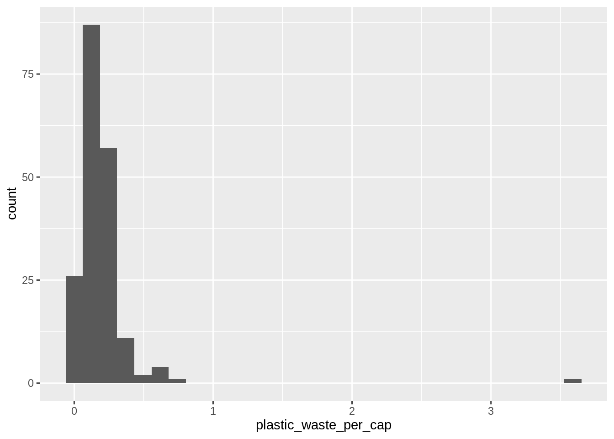
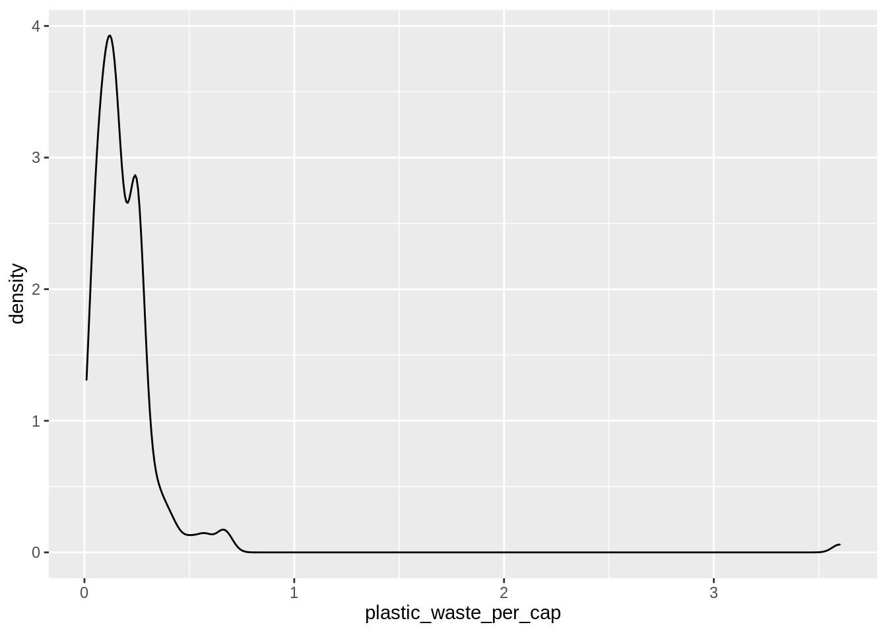
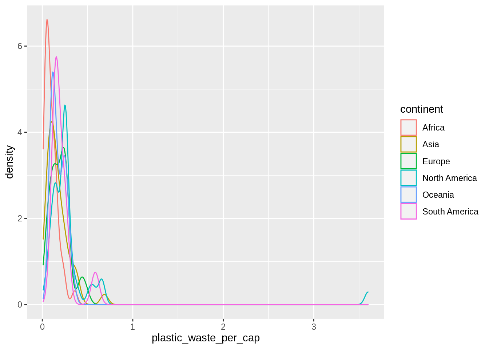
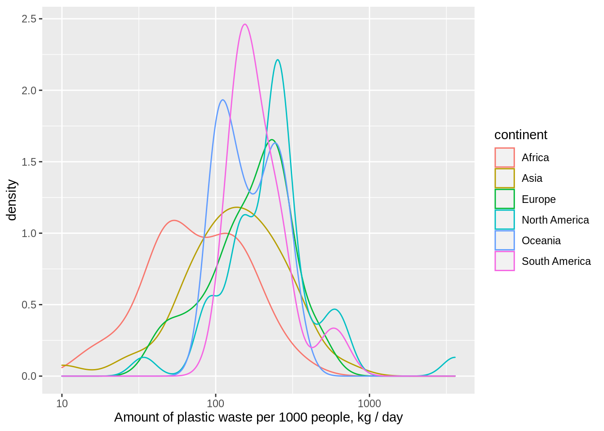
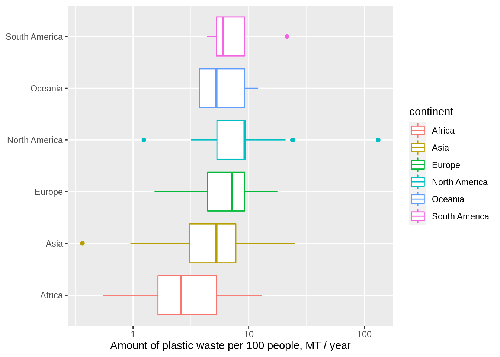
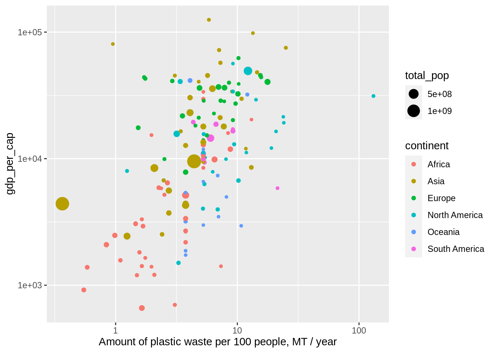

library(tidyverse)AE03-02 Exploring data on plstic waste
This exercise is adopted from Data Science in a Box.
Learning goals
- Visualizing numerical and categorical data and interpreting visualizations
- Recreating visualizations
- Getting more practice using with R, RStudio, Git, and GitHub
Setup
Data
The data set for this assignment can be found as a csv file in the data folder of your repository. You can read it in using the following.
plastic_waste <- read_csv("data/plastic-waste.csv")The variable descriptions are as follows:
code: 3 Letter country codeentity: Country namecontinent: Continent nameyear: Yeargdp_per_cap: GDP per capita constant 2011 international $, rateplastic_waste_per_cap: Amount of plastic waste per capita in kg/daymismanaged_plastic_waste_per_cap: Amount of mismanaged plastic waste per capita in kg/daymismanaged_plastic_waste: Tonnes of mismanaged plastic wastecoastal_pop: Number of individuals living on/near coasttotal_pop: Total population according to Gapminder
Exercises 1.
Glimpse at the data
plastic_waste %>% glimpse()Rows: 240
Columns: 10
$ code <chr> "AFG", "ALB", "DZA", "ASM", "AND", "A…
$ entity <chr> "Afghanistan", "Albania", "Algeria", …
$ continent <chr> "Asia", "Europe", "Africa", "Oceania"…
$ year <dbl> 2010, 2010, 2010, 2010, 2010, 2010, 2…
$ gdp_per_cap <dbl> 1614.255, 9927.182, 12870.603, NA, NA…
$ plastic_waste_per_cap <dbl> NA, 0.069, 0.144, NA, NA, 0.062, 0.25…
$ mismanaged_plastic_waste_per_cap <dbl> NA, 0.032, 0.086, NA, NA, 0.045, 0.01…
$ mismanaged_plastic_waste <dbl> NA, 29705, 520555, NA, NA, 62528, 52,…
$ coastal_pop <dbl> NA, 2530533, 16556580, NA, NA, 379004…
$ total_pop <dbl> 31411743, 3204284, 35468208, 68420, 8…plastic_waste %>% head()# A tibble: 6 × 10
code entity continent year gdp_per_cap plastic_waste_p… mismanaged_plas…
<chr> <chr> <chr> <dbl> <dbl> <dbl> <dbl>
1 AFG Afghanist… Asia 2010 1614. NA NA
2 ALB Albania Europe 2010 9927. 0.069 0.032
3 DZA Algeria Africa 2010 12871. 0.144 0.086
4 ASM American … Oceania 2010 NA NA NA
5 AND Andorra Europe 2010 NA NA NA
6 AGO Angola Africa 2010 5898. 0.062 0.045
# … with 3 more variables: mismanaged_plastic_waste <dbl>, coastal_pop <dbl>,
# total_pop <dbl>Exercises 2.
Compute summary statistics using skimr::skim() . Load the package first or even install it if needed.
library(skimr)
plastic_waste %>% skim()| Name | Piped data |
| Number of rows | 240 |
| Number of columns | 10 |
| _______________________ | |
| Column type frequency: | |
| character | 3 |
| numeric | 7 |
| ________________________ | |
| Group variables | None |
Variable type: character
| skim_variable | n_missing | complete_rate | min | max | empty | n_unique | whitespace |
|---|---|---|---|---|---|---|---|
| code | 0 | 1 | 3 | 3 | 0 | 233 | 0 |
| entity | 0 | 1 | 4 | 32 | 0 | 233 | 0 |
| continent | 0 | 1 | 4 | 13 | 0 | 6 | 0 |
Variable type: numeric
| skim_variable | n_missing | complete_rate | mean | sd | p0 | p25 | p50 | p75 | p100 | hist |
|---|---|---|---|---|---|---|---|---|---|---|
| year | 0 | 1.00 | 2010.00 | 0.00 | 2010.00 | 2010.00 | 2010.00 | 2010.00 | 2010.0 | ▁▁▇▁▁ |
| gdp_per_cap | 45 | 0.81 | 17682.60 | 19908.70 | 660.21 | 3816.04 | 10436.37 | 23107.79 | 125140.8 | ▇▂▁▁▁ |
| plastic_waste_per_cap | 51 | 0.79 | 0.20 | 0.28 | 0.01 | 0.10 | 0.14 | 0.25 | 3.6 | ▇▁▁▁▁ |
| mismanaged_plastic_waste_per_cap | 51 | 0.79 | 0.05 | 0.05 | 0.00 | 0.01 | 0.03 | 0.07 | 0.3 | ▇▂▁▁▁ |
| mismanaged_plastic_waste | 51 | 0.79 | 171569.84 | 726640.23 | 1.00 | 2245.00 | 16259.00 | 80759.00 | 8819717.0 | ▇▁▁▁▁ |
| coastal_pop | 51 | 0.79 | 10944246.95 | 30930553.85 | 596.00 | 257904.00 | 1986723.00 | 7573074.00 | 262892387.0 | ▇▁▁▁▁ |
| total_pop | 10 | 0.96 | 30936344.00 | 124266269.69 | 50.00 | 532412.00 | 5413332.50 | 19703072.25 | 1341335152.0 | ▇▁▁▁▁ |
Summary statistics by continent.
plastic_waste %>%
group_by(continent) %>%
skim()| Name | Piped data |
| Number of rows | 240 |
| Number of columns | 10 |
| _______________________ | |
| Column type frequency: | |
| character | 2 |
| numeric | 7 |
| ________________________ | |
| Group variables | continent |
Variable type: character
| skim_variable | continent | n_missing | complete_rate | min | max | empty | n_unique | whitespace |
|---|---|---|---|---|---|---|---|---|
| code | Africa | 0 | 1 | 3 | 3 | 0 | 58 | 0 |
| code | Asia | 0 | 1 | 3 | 3 | 0 | 53 | 0 |
| code | Europe | 0 | 1 | 3 | 3 | 0 | 53 | 0 |
| code | North America | 0 | 1 | 3 | 3 | 0 | 38 | 0 |
| code | Oceania | 0 | 1 | 3 | 3 | 0 | 24 | 0 |
| code | South America | 0 | 1 | 3 | 3 | 0 | 14 | 0 |
| entity | Africa | 0 | 1 | 4 | 28 | 0 | 58 | 0 |
| entity | Asia | 0 | 1 | 4 | 20 | 0 | 53 | 0 |
| entity | Europe | 0 | 1 | 5 | 22 | 0 | 53 | 0 |
| entity | North America | 0 | 1 | 4 | 32 | 0 | 38 | 0 |
| entity | Oceania | 0 | 1 | 4 | 24 | 0 | 24 | 0 |
| entity | South America | 0 | 1 | 4 | 16 | 0 | 14 | 0 |
Variable type: numeric
| skim_variable | continent | n_missing | complete_rate | mean | sd | p0 | p25 | p50 | p75 | p100 | hist |
|---|---|---|---|---|---|---|---|---|---|---|---|
| year | Africa | 0 | 1.00 | 2010.00 | 0.00 | 2010.00 | 2010.00 | 2010.00 | 2010.00 | 2.010000e+03 | ▁▁▇▁▁ |
| year | Asia | 0 | 1.00 | 2010.00 | 0.00 | 2010.00 | 2010.00 | 2010.00 | 2010.00 | 2.010000e+03 | ▁▁▇▁▁ |
| year | Europe | 0 | 1.00 | 2010.00 | 0.00 | 2010.00 | 2010.00 | 2010.00 | 2010.00 | 2.010000e+03 | ▁▁▇▁▁ |
| year | North America | 0 | 1.00 | 2010.00 | 0.00 | 2010.00 | 2010.00 | 2010.00 | 2010.00 | 2.010000e+03 | ▁▁▇▁▁ |
| year | Oceania | 0 | 1.00 | 2010.00 | 0.00 | 2010.00 | 2010.00 | 2010.00 | 2010.00 | 2.010000e+03 | ▁▁▇▁▁ |
| year | South America | 0 | 1.00 | 2010.00 | 0.00 | 2010.00 | 2010.00 | 2010.00 | 2010.00 | 2.010000e+03 | ▁▁▇▁▁ |
| gdp_per_cap | Africa | 7 | 0.88 | 5442.00 | 7093.30 | 660.21 | 1406.43 | 2365.68 | 6170.47 | 3.372337e+04 | ▇▂▁▁▁ |
| gdp_per_cap | Asia | 5 | 0.91 | 23227.78 | 27752.65 | 1614.26 | 4407.30 | 10973.97 | 31249.36 | 1.251408e+05 | ▇▂▁▁▁ |
| gdp_per_cap | Europe | 7 | 0.87 | 29171.33 | 17957.04 | 3910.86 | 16564.70 | 26198.77 | 39630.60 | 9.174329e+04 | ▇▇▃▁▁ |
| gdp_per_cap | North America | 14 | 0.63 | 18133.37 | 14693.41 | 1502.03 | 7966.22 | 12561.91 | 23364.65 | 5.639501e+04 | ▇▃▂▁▁ |
| gdp_per_cap | Oceania | 10 | 0.58 | 9233.16 | 12110.15 | 1731.54 | 3037.73 | 4231.67 | 7162.18 | 4.146404e+04 | ▇▁▁▁▁ |
| gdp_per_cap | South America | 2 | 0.86 | 12440.43 | 4971.02 | 5407.47 | 8836.64 | 12556.19 | 16679.33 | 1.944205e+04 | ▇▇▁▇▇ |
| plastic_waste_per_cap | Africa | 18 | 0.69 | 0.10 | 0.07 | 0.01 | 0.04 | 0.07 | 0.14 | 3.600000e-01 | ▇▅▁▁▁ |
| plastic_waste_per_cap | Asia | 12 | 0.77 | 0.17 | 0.13 | 0.01 | 0.08 | 0.14 | 0.21 | 6.900000e-01 | ▇▅▂▁▁ |
| plastic_waste_per_cap | Europe | 17 | 0.68 | 0.20 | 0.11 | 0.04 | 0.12 | 0.20 | 0.25 | 4.800000e-01 | ▇▇▇▁▂ |
| plastic_waste_per_cap | North America | 0 | 1.00 | 0.34 | 0.56 | 0.03 | 0.15 | 0.25 | 0.26 | 3.600000e+00 | ▇▁▁▁▁ |
| plastic_waste_per_cap | Oceania | 2 | 0.92 | 0.18 | 0.07 | 0.10 | 0.10 | 0.14 | 0.25 | 3.300000e-01 | ▇▁▁▃▁ |
| plastic_waste_per_cap | South America | 2 | 0.86 | 0.21 | 0.13 | 0.12 | 0.14 | 0.16 | 0.25 | 5.900000e-01 | ▇▃▁▁▁ |
| mismanaged_plastic_waste_per_cap | Africa | 18 | 0.69 | 0.06 | 0.04 | 0.00 | 0.04 | 0.05 | 0.09 | 1.700000e-01 | ▇▇▆▂▁ |
| mismanaged_plastic_waste_per_cap | Asia | 12 | 0.77 | 0.05 | 0.06 | 0.00 | 0.01 | 0.03 | 0.07 | 3.000000e-01 | ▇▃▁▁▁ |
| mismanaged_plastic_waste_per_cap | Europe | 17 | 0.68 | 0.02 | 0.02 | 0.00 | 0.00 | 0.01 | 0.02 | 6.000000e-02 | ▇▂▁▁▁ |
| mismanaged_plastic_waste_per_cap | North America | 0 | 1.00 | 0.03 | 0.04 | 0.00 | 0.01 | 0.02 | 0.05 | 1.900000e-01 | ▇▃▁▁▁ |
| mismanaged_plastic_waste_per_cap | Oceania | 2 | 0.92 | 0.08 | 0.06 | 0.00 | 0.01 | 0.09 | 0.10 | 2.400000e-01 | ▆▇▁▂▁ |
| mismanaged_plastic_waste_per_cap | South America | 2 | 0.86 | 0.04 | 0.06 | 0.00 | 0.02 | 0.03 | 0.04 | 2.200000e-01 | ▇▁▁▁▁ |
| mismanaged_plastic_waste | Africa | 18 | 0.69 | 123364.73 | 227741.77 | 96.00 | 15996.25 | 34961.50 | 69788.75 | 9.670120e+05 | ▇▁▁▁▁ |
| mismanaged_plastic_waste | Asia | 12 | 0.77 | 574429.02 | 1482265.25 | 1.00 | 5599.00 | 33747.00 | 480493.00 | 8.819717e+06 | ▇▁▁▁▁ |
| mismanaged_plastic_waste | Europe | 17 | 0.68 | 31355.72 | 82280.10 | 62.00 | 2502.50 | 10997.00 | 25006.75 | 4.859370e+05 | ▇▁▁▁▁ |
| mismanaged_plastic_waste | North America | 0 | 1.00 | 35790.18 | 59840.20 | 11.00 | 294.00 | 2865.50 | 73833.75 | 2.754240e+05 | ▇▂▁▁▁ |
| mismanaged_plastic_waste | Oceania | 2 | 0.92 | 10569.95 | 21106.05 | 4.00 | 426.25 | 2165.50 | 8620.50 | 8.983500e+04 | ▇▁▁▁▁ |
| mismanaged_plastic_waste | South America | 2 | 0.86 | 101595.67 | 133049.24 | 5.00 | 17157.00 | 67087.50 | 121481.50 | 4.714040e+05 | ▇▃▁▁▁ |
| coastal_pop | Africa | 18 | 0.69 | 4817735.85 | 6335427.38 | 6839.00 | 858697.75 | 1994069.00 | 6782124.50 | 2.747711e+07 | ▇▂▁▁▁ |
| coastal_pop | Asia | 12 | 0.77 | 30428085.05 | 58277023.87 | 596.00 | 1124249.00 | 6048920.00 | 22890252.00 | 2.628924e+08 | ▇▁▁▁▁ |
| coastal_pop | Europe | 17 | 0.68 | 6892015.69 | 10594720.27 | 33483.00 | 550160.00 | 2729103.50 | 8590222.00 | 4.325889e+07 | ▇▂▁▁▁ |
| coastal_pop | North America | 0 | 1.00 | 5498696.42 | 18491616.02 | 5173.00 | 66873.75 | 251974.50 | 3305490.75 | 1.129250e+08 | ▇▁▁▁▁ |
| coastal_pop | Oceania | 2 | 0.92 | 1231487.00 | 3701294.94 | 1379.00 | 21562.00 | 130575.50 | 267439.50 | 1.723595e+07 | ▇▁▁▁▁ |
| coastal_pop | South America | 2 | 0.86 | 12003834.17 | 20681096.17 | 2602.00 | 485492.00 | 6010799.00 | 14347930.25 | 7.469677e+07 | ▇▂▁▁▁ |
| total_pop | Africa | 0 | 1.00 | 17624731.03 | 26749851.97 | 4118.00 | 1798031.75 | 9373146.50 | 19703072.25 | 1.584232e+08 | ▇▁▁▁▁ |
| total_pop | Asia | 2 | 0.96 | 83878532.55 | 250240369.56 | 596.00 | 3659834.50 | 14138255.00 | 48073298.00 | 1.341335e+09 | ▇▁▁▁▁ |
| total_pop | Europe | 1 | 0.98 | 16241523.63 | 27387302.63 | 29244.00 | 1857545.00 | 5413332.50 | 10873886.00 | 1.429582e+08 | ▇▁▁▁▁ |
| total_pop | North America | 4 | 0.89 | 15933532.15 | 55717986.49 | 5934.00 | 72995.25 | 374345.50 | 6091785.50 | 3.103839e+08 | ▇▁▁▁▁ |
| total_pop | Oceania | 2 | 0.92 | 1657649.68 | 4893477.78 | 50.00 | 20334.00 | 101802.00 | 265790.50 | 2.226838e+07 | ▇▁▁▁▁ |
| total_pop | South America | 1 | 0.93 | 30196303.54 | 51854582.96 | 231151.00 | 3368786.00 | 14464739.00 | 29076512.00 | 1.949465e+08 | ▇▂▁▁▁ |
Exercises 3.
Let’s start by taking a look at the distribution of plastic waste per capita in 2010.
plastic_waste %>%
ggplot() +
aes(x = plastic_waste_per_cap) +
geom_histogram()`stat_bin()` using `bins = 30`. Pick better value with `binwidth`.Warning: Removed 51 rows containing non-finite values (stat_bin).
One country stands out as an unusual observation at the top of the distribution.
One way of identifying this country is to filter the data for countries where plastic waste per capita is greater than 3.5 kg/person.
plastic_waste %>%
filter(plastic_waste_per_cap > 3.5)# A tibble: 1 × 10
code entity continent year gdp_per_cap plastic_waste_p… mismanaged_plas…
<chr> <chr> <chr> <dbl> <dbl> <dbl> <dbl>
1 TTO Trinidad … North Am… 2010 31261. 3.6 0.19
# … with 3 more variables: mismanaged_plastic_waste <dbl>, coastal_pop <dbl>,
# total_pop <dbl>Did you expect this result? You might consider doing some research on Trinidad and Tobago to see why plastic waste per capita is so high there, or whether this is a data error.
Another way of visualizing numerical data is using density plots.
Built a density plot below.
plastic_waste %>%
ggplot() +
aes(x = plastic_waste_per_cap) +
geom_density()Warning: Removed 51 rows containing non-finite values (stat_density).
And compare distributions across continents by colouring density curves by continent.
plastic_waste %>%
ggplot() +
aes(x = plastic_waste_per_cap, color = continent) +
geom_density()Warning: Removed 51 rows containing non-finite values (stat_density).
Transform the variable of plastic waste per capita to observe more informative density plot.
plastic_waste %>%
mutate(plastic_waste_per_1000_pple =
plastic_waste_per_cap * 1000) %>%
ggplot() +
aes(x = plastic_waste_per_1000_pple,
color = continent) +
geom_density() +
scale_x_log10() +
labs(x = "Amount of plastic waste per 1000 people, kg / day")Warning: Removed 51 rows containing non-finite values (stat_density).
Exercises 4.
Built a box plot of plastic sate by continent
plastic_waste %>%
mutate(plastic_waste_per_100_pple =
plastic_waste_per_cap * 100 * 365 / 1000) %>%
ggplot() +
aes(x = plastic_waste_per_100_pple,
y = continent,
color = continent) +
geom_boxplot() +
scale_x_log10() +
labs(x = "Amount of plastic waste per 100 people, MT / year",
y = NULL)Warning: Removed 51 rows containing non-finite values (stat_boxplot).
Exercises 5.
Build a scatter plot of plastic waste per capital and GDP per capital.
plastic_waste %>%
mutate(plastic_waste_per_1000_pple =
plastic_waste_per_cap * 100 * 365 / 1000) %>%
ggplot() +
aes(x = plastic_waste_per_1000_pple,
y = gdp_per_cap,
color = continent,
size = total_pop) +
geom_point() +
scale_x_log10() +
scale_y_log10() +
labs(x = "Amount of plastic waste per 100 people, MT / year")Warning: Removed 91 rows containing missing values (geom_point).